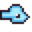

De Reisguh: een guh-conducteur. Rechtsklik om hem te ontdekken; daarna reis je tussen alle Reisguhs die je kent. Er zit er een bij elk guhportaal, bij het guhkasteel en in de grote plekken: Guhwarden, Knuffeldal, de Guhkermis, Guhland, het Ballonfestival en het Guhcircuit.
Reisguhs: travel through the GuhmensionReisguhs: reizen door de Guhmensie
A Reisguh is a sky blue guh conductor with a real conductor's cap (golden band, a guh badge) and a golden whistle on a cord: now and then, and whenever someone travels with him, he blows it (tuut tuut!). He is a waypoint. Right-click one to discover it. After that, right-click opens its menu: give it a name (for everyone), and travel with one click to any other Reisguh you have discovered (nearest first). Reisguhs only work in the Guhmension.
Een Reisguh is een hemelsblauwe guh-conducteur met een echt conducteurspetje (gouden band, een guh-embleem) en een gouden fluitje aan een koord: af en toe, en telkens als iemand met hem reist, blaast hij erop (tuut tuut!). Hij is een reispunt. Rechtsklik er een om hem te ontdekken. Daarna opent een rechtsklik zijn menu: geef hem een naam (voor iedereen), en reis met een klik naar elke andere Reisguh die jij ontdekt hebt (dichtstbijzijnde eerst). Reisguhs werken alleen in de Guhmensie.
- One sits within 5 blocks of every new guh portal in the Guhmension (so also where you first came in), and one by the garden gate of the guh castle.Er zit er een binnen 5 blokken van elk nieuw guhportaal in de Guhmensie (dus ook waar je als eerste binnenkwam), en een bij de tuinpoort van het guhkasteel.
- One also lives in the big places: Guhwarden (Elf-Guhjestocht), the Knuffeldal town, the Guhkermis, Guhland, the Ballonfestival and the Guhcircuit; also at every story place (Nomguh, the kloon-eiland, the stilt house and the capsule on Guhwai'i).Woont er ook een in de grote plekken: Guhwarden (Elf-Guhjestocht), het Knuffeldal-stadje, de Guhkermis, Guhland, het Ballonfestival en het Guhcircuit; ook bij elke verhaalplek (Nomguh, het kloon-eiland, het paalhuisje en de capsule op Guhwai'i).
- Now and then a Reisguh just turns up somewhere in the Guhmension (a bit more often).Af en toe duikt er ergens in de Guhmensie vanzelf een Reisguh op (sinds wat vaker).
- Move one like a tamed guh: sneak + right-click picks it up, right-click a block puts it down. Its name and who discovered it stay; its waypoint moves along.Verplaats er een zoals een getemde guh: sluip + rechtsklik pakt hem op, rechtsklik op een blok zet hem neer. Zijn naam en wie hem ontdekt heeft blijven; zijn reispunt verhuist mee.
- A Reisguh whistle (ender pearl, kaas knabbels and light blue dye: 2 whistles) puts down a new one.Een Reisguh-fluitje (enderparel, kaasknabbels en lichtblauwe kleurstof: 2 fluitjes) zet een nieuwe neer.

The ReisguhDe Reisguh
A real guh conductor: a dark blue conductor's cap with a shiny peak and a golden guh badge, and a golden whistle on a cord. Now and then, and every time you travel, he blows it: tuut!
Een echte guh-conducteur: een donkerblauw conducteurspetje met een glimmende klep en een gouden guh-embleem, en een gouden fluitje aan een koord. Af en toe, en elke keer dat je reist, blaast hij erop: tuut!
More ReisguhsMeer Reisguhs
Besides the one at every guh portal and at the guh castle, a Reisguh now lives in the big places: Guhwarden (on the terrace of the Elf-Guhjestocht), the Knuffeldal town, the Guhkermis (on the station platform), Guhland, the Ballonfestival and the Guhcircuit (just inside the Pitpaleis). The story places have one too. Wild Reisguhs also turn up a bit more often (and a bit closer together). Right-click one to discover it, then travel there in one click. (Only in newly generated places.)
Naast die bij elk guhportaal en bij het guhkasteel woont er nu een Reisguh in de grote plekken: Guhwarden (op het terras van de Elf-Guhjestocht), het Knuffeldal-stadje, de Guhkermis (op het perron), Guhland, het Ballonfestival en het Guhcircuit (net binnen het Pitpaleis). De verhaalplekken hebben er ook een. Wilde Reisguhs duiken ook wat vaker op (en iets dichter bij elkaar). Rechtsklik er een om hem te ontdekken, en reis er daarna met een klik naartoe. (Alleen in nieuw gemaakte plekken.)